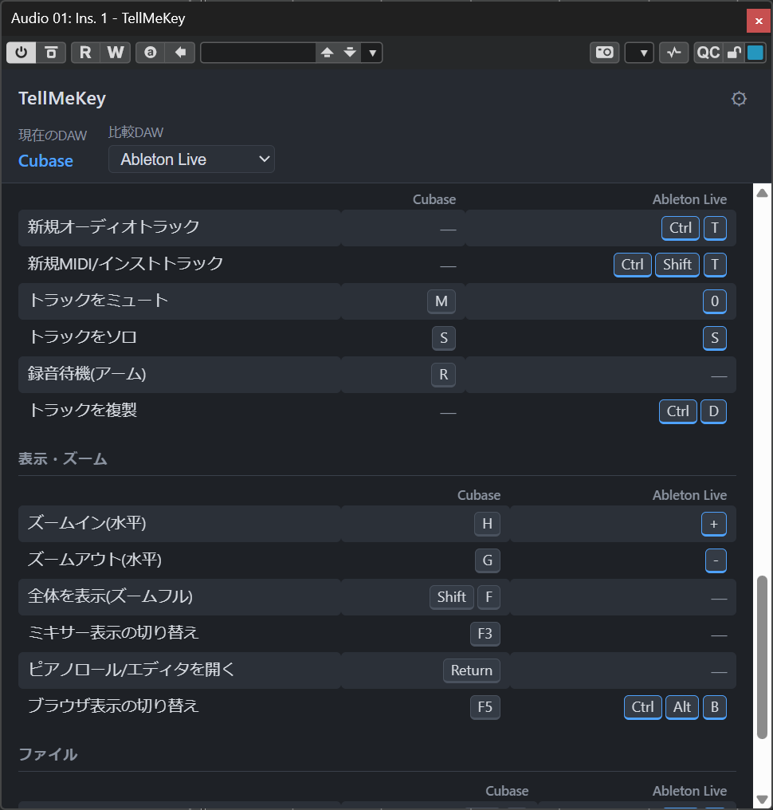

1. TellMeKeyとは
TellMeKeyは、DAWのトラックにインサートするだけで、そのDAWでよく使う操作(再生・録音・分割・クオンタイズなど約47項目)のショートカットキーを一覧表示するプラグインです。音声には一切影響しません(完全パススルー)。
最大の特徴は比較表示です。「前はAbleton Liveを使っていたが、いまはCubaseに乗り換えた」というようなとき、慣れたDAWのキーと今のDAWのキーを並べて確認できます。

2. 動作環境
| OS | Windows 10 / 11(64bit)、macOS |
|---|---|
| プラグイン形式 | VST3(Windows / macOS)、AU(macOS) |
| 対応DAW(自動判別) | Cubase、Ableton Live、FL Studio、Fender Studio Pro(旧Studio Oneを含む)、Logic Pro、Pro Tools、REAPER、Bitwig Studio |
| その他 | Windowsでは WebView2 ランタイムを使用します(Windows 11には標準搭載) |
上記以外のDAWでもVST3が動くホストならプラグイン自体は起動しますが、「不明なDAW」と表示されショートカットは表示されません。
3. インストール
Windows
TellMeKey.vst3フォルダを次の場所にコピーします:
C:\Program Files\Common Files\VST3\- DAWを起動(すでに起動中ならプラグインの再スキャン)します。
macOS
- VST3:
/Library/Audio/Plug-Ins/VST3/にコピー - AU:
/Library/Audio/Plug-Ins/Components/にコピー
4. 基本的な使い方
- 任意のオーディオ/インストゥルメントトラックのインサート(エフェクトスロット)に TellMeKey を追加します。
- プラグイン画面を開くと、実行中のDAWが自動判別され、画面左上の「現在のDAW」に名前が表示されます。
- その下に、カテゴリごと(トランスポート/カーソル移動/編集/トラック/表示・ズーム/ファイル)のショートカット一覧が表示されます。
- キーが割り当てられていない操作は「—」と表示されます。
- ウィンドウはドラッグでリサイズでき、サイズはプロジェクトに保存されます。
- どのトラックにインサートしても表示内容は同じです。使い終わったら外してかまいません。
5. 比較DAWの切り替え
画面上部の「比較DAW」ドロップダウンで別のDAWを選ぶと、表に列が追加され、同じ操作がそのDAWではどのキーかを並べて確認できます。「なし」を選ぶと現在のDAWのみの表示に戻ります。
- 選択した比較DAWはプロジェクトに保存され、次回開いたときも復元されます。
- 比較列のキーバッジは青枠で表示されます。
6. キー表記の見かた
- 組み合わせキーは CtrlShiftS のように1キー1バッジで表示されます(
Ctrl+Shift+Sの意味)。 - Num 1 や Num + はテンキーのキーです。
- Shiftホイール はキーとマウスホイールの組み合わせです。
- macでは自動的に Ctrl→Cmd、Alt→Opt に読み替えて表示されます。
- Logic Proのキーは元からmac表記(Cmd / Opt)で収録されています。
7. 設定画面
画面右上の ⚙ ボタンで設定画面を開きます。
| JSONファイルを指定… | カスタマイズしたキーマップ定義(JSONファイル)を選んで読み込みます。以後はそのファイルが優先されます。 |
|---|---|
| デフォルトに戻す | カスタムJSONの指定を解除し、内蔵のキーマップ定義に戻します。 |
| 再読み込み | 指定中のJSONファイルを読み込み直します。ファイルを編集した後、DAWを再起動せずに反映できます。 |
カスタムJSONの指定はすべてのDAW・すべてのインスタンスで共通です。一度設定すれば、別のDAWや別のプロジェクトでも同じキーマップが使われます。
8. キーマップのカスタマイズ
表示される操作・キー・ラベルはすべてJSONファイルで定義されており、自由に書き換えられます。
- 配布物に含まれる
keymap.json(内蔵定義と同内容)を任意の場所にコピーします。 - テキストエディタで開き、編集します。たとえば:
"label"を書き換えれば表示言語を変えられます(英語版のサンプルkeymap.en.jsonも同梱)。"shortcuts"のキーを自分のDAWのキーマップ設定に合わせて修正できます。- 操作(行)を追加・削除することもできます。
- 設定画面の「JSONファイルを指定…」で編集したファイルを選びます。
- 以後ファイルを編集したら「再読み込み」を押すだけで反映されます。
ご注意: 内蔵のショートカットデータは各DAWの標準キーバインドをもとにした参考値です。DAWのバージョンやお使いのキーマッププリセットによって実際のキーと異なる場合があります。気になる箇所はJSONを編集してご自身の環境に合わせてください。
JSONの形式が壊れている場合は警告が表示され、自動的に内蔵の定義に切り替わります(プラグインが動かなくなることはありません)。
9. よくある質問
Q. 「不明なDAW」と表示され、何も一覧が出ない
お使いのホストが自動判別の対象(動作環境参照)に含まれていません。この場合ショートカットは表示されません。対象DAWの追加には開発者向けの手順(ソース修正とビルド)が必要です。
Q. 画面が真っ白 / UIが表示されない(Windows)
WebView2ランタイムがインストールされていない可能性があります。Windows 11には標準搭載ですが、Windows 10では Microsoftのサイトから「WebView2 ランタイム(Evergreen)」をインストールしてください。
Q. 音質やレイテンシーに影響はある?
ありません。音声処理は何もせずそのまま通過させています(レイテンシー0サンプル)。
Q. 表示されるキーが実際のDAWと違う
内蔵データは標準キーバインドをもとにした参考値です。DAWのバージョン差やキーマッププリセット(Cubase互換キーマップ等)により異なることがあります。カスタマイズの手順でJSONを実際の環境に合わせて修正してください。
Q. 黄色い警告(カスタムJSONの読み込みに失敗)が出る
指定したJSONファイルが見つからないか、JSONの文法にエラーがあります(カンマの付け忘れ等が典型です)。その間は内蔵の定義で表示されています。ファイルを修正して「再読み込み」を押すか、「デフォルトに戻す」で指定を解除してください。
Q. プロジェクトに何が保存される?
比較DAWの選択とウィンドウサイズがプロジェクト(インスタンス)ごとに保存されます。カスタムJSONの指定場所はプロジェクトではなくPC全体の設定として保存されます。